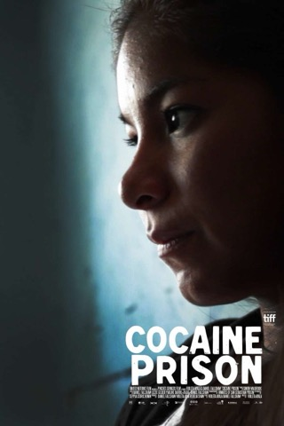
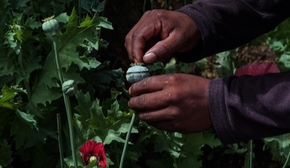

About the film

COCAINE PRISON unfolds in Bolivia’s notorious San Sebastian gaol, a virtual citadel inside a crumbling old colonial house. The film follows the lives of Hernan, a drug mule arrested on his first run, his younger sister Daisy who struggles to win his freedom, and Hernan’s friend Mario, a cocaine worker and father sealed away at San Sebastian, far from his children. In a country where the coca leaf is woven deep into the culture and poverty assures a steady supply of labor, COCAINE PRISON goes beyond the image of the gun-toting “Narco” to uncover the lives of three small fish who swim in the tide of coca’s promise.
At the festival
- 2017 DC Premiere · Friday, October 20, 2017 · 6:00 PM · The Naval Heritage CenterDiscussion with filmmaker to follow screening
More films on these topics

Poppy CrashAndalusia Knoll Soloff2019 · 11 min NonstopZac Manuel, Marta Rodriguez Maleck2021 · 12 min
NonstopZac Manuel, Marta Rodriguez Maleck2021 · 12 min Dark SunsJulien Elie2019 · 154 min
Dark SunsJulien Elie2019 · 154 min Cartel LandMatthew Heineman2015 · 100 min
Cartel LandMatthew Heineman2015 · 100 min RescueSine Plambech2026 · 90 min
RescueSine Plambech2026 · 90 min The Drug in Our PocketAnnie Sundberg2026 · 77 min
The Drug in Our PocketAnnie Sundberg2026 · 77 min